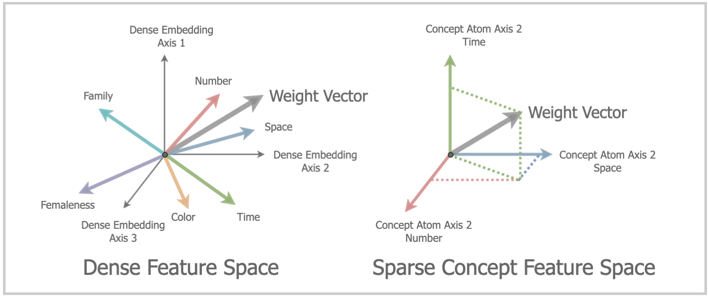

Principled Neuroscientific Discovery with Machine Learning
Dedicated to my grandma, 赵友庄.

Abstract
Understanding brain function requires modeling a high-dimensional, nonlinear dynamical system continuously driven by sensory input, shaped by internal state and context, and expressed through behavior. Machine learning can be used to extract predictive structure from large-scale neural recordings, but its scientific value hinges on whether fitted parameters admit interpretation as testable hypotheses about neural computation. This thesis develops and applies interpretable predictive models—primarily linearized encoding models that map stimulus or behavioral features onto neural responses—to investigate (i) how human cortex represents abstract concepts during naturalistic language comprehension and (ii) how deep brain stimulation (DBS) modulates movement-related neural dynamics in Parkinson’s disease.
The first study addresses a central limitation of encoding models built on dense word embeddings or neural network activations: superposition. When latent semantic factors outnumber embedding dimensions, distinct concepts become entangled along shared directions, rendering voxelwise regression weights uninterpretable and formally non-identifiable. I introduce the Sparse Concept Encoding Model, which applies sparse dictionary learning to project dense embeddings into an overcomplete basis of interpretable concept atoms. Because each atom isolates a coherent semantic direction, voxel tuning can be read directly from regression coefficients. Applied to whole-brain fMRI acquired during naturalistic story listening, this approach matches the prediction accuracy of conventional dense models while substantially improving interpretability. The resulting cortical maps reveal convergent selectivity for time, space, and number in the intraparietal sulcus and the inferior frontal gyrus—consistent with the shared-magnitude hypothesis—and uncover systematic similarity structure among distributed semantic representations.
The second study moves to a clinical domain where characterizing neural dynamics carries immediate therapeutic implications. Parkinson’s disease is increasingly understood as a disorder of network dynamics wherein motor symptoms arise from aberrant oscillatory activity across basal ganglia and sensorimotor cortex. Yet, DBS remains an open-loop therapy with parameters tuned heuristically. Using a home-deployed multimodal data collection platform integrating bidirectional neurostimulators, bilateral wrist accelerometry, and video-based pose estimation, we recorded synchronized neural and behavioral data from two participants performing standardized motor tasks across multiple stimulation amplitudes. By building encoding models that predict neural spectral power data from behavioral features, we demonstrate how temporally rich predictors such as full acceleration spectrograms and task labels outperform coarse movement summaries. Thus, this study highlights the importance of fine-grained behavioral structure for identifying movement-related variance in sensed neural signals. In the participant with stronger baseline model performance, higher stimulation amplitudes enhanced prediction performance across sensorimotor cortex and subthalamic nucleus. We show that these gains arise from amplification of a movement-related spectral component characterized by beta suppression alongside alpha/delta and gamma enhancement, including a prominent peak at the stimulation-entrained subharmonic. This interpretation is consistent with “information lesion” accounts of DBS, wherein pathological synchronization impedes movement-related signaling and high-frequency stimulation restores information flow through basal ganglia–cortical circuits.
Together, these studies illustrate how high-volume data collected under naturalistic or semi-naturalistic conditions can be analyzed with interpretable predictive models to transform accurate prediction into mechanistic neuroscientific hypotheses.
Introduction
Artificial intelligence has undergone an extraordinary transformation over the span of my PhD. Around 2016–2017, AlphaGo defeated human masters at Go, a 2,500-year-old game whose combinatorial space is so vast that exhaustive search is impossible in practice. Around the same time, the Gallant Lab began using word embeddings in their encoding model pipeline to predict brain activity. These embeddings represent words as points in a geometric space, where distances and directions reflect relationships in meaning. In doing so, they evoke Ludwig Wittgenstein’s idea that ’the meaning of a word is its use in the language,’ turning patterns of co-occurrence in natural language into geometry in a learned vector space.
These developments were what drew me into this field. Yet when I began my PhD in 2020, even against this backdrop, almost no one I spoke with in adjacent research areas believed that language models would approach human-level language abilities in the near term. Tasks that were widely regarded as out of reach, from writing usable code or solving Olympiad-level mathematics problems to engaging in extended technical dialogues, became routine capabilities of large models within just a few years. As I complete this work, it feels as though I started my PhD in one technological epoch and finished it in another.
For me and many others, the most compelling promise of machine learning has always been its potential to advance the sciences. Treating neurological disorders, curing cancers, and discovering new materials are more than technical milestones; they are breakthroughs that could profoundly reshape how we live and reduce suffering. They are also precisely the domains where unaided human intuition is weakest: the systems involved are noisy, high-dimensional, nonlinear, and often far from equilibrium.
In response to this promise, many groups, including large industrial labs and research institutes, are now pursuing the development of “AI scientists”: language model–centric systems that read papers, synthesize literature, and generate hypotheses. Such tools may be valuable, particularly for organizing and sharing knowledge. Yet in most scientific domains they cannot address the principal bottleneck. For complex systems in molecular biology, neuroscience, and materials science, the true constraint is not the number of ideas that can be written down but the availability of rich, high-quality experimental data against which to evaluate these ideas. These systems inhabit enormous state spaces; the set of hypotheses humans have articulated and tested is a measure-zero subset of what is possible. Genuine progress requires dense, carefully designed measurements in the environments where these systems actually operate, rather than just more hypotheses on a page.
Machine learning models are, at their core, flexible high-dimensional nonlinear functions. With the right data, they can detect patterns, uncover latent structure, and suggest hypotheses at scales unachievable with human cognition alone. But without such data, and without an inductive structure to keep the models interpretable, they risk becoming just another opaque layer between scientists and the underlying phenomena. The central question for “AI for science” is therefore not simply how powerful our models are, but how to couple these models to experiments so that they enable understanding rather than mere prediction. This thesis presents two projects that move deliberately toward a more data-grounded and principled vision of machine learning for science.
Chapter 2 — Interpretable Brain Encoding Model with Sparse Concept Atoms
In Chapter 2, adapted from (Zeng and Gallant, 2025), I ask how the brain represents abstract ideas such as time, space, and number, using fMRI encoding models as the main tool. In this framework, a naturalistic stimulus is transformed into a feature matrix, and a regularized linear model is fit to predict the corresponding pattern of brain responses. Each voxel is thus associated with a weight vector, a direction in feature space that, in principle, reveals which aspects of the stimulus that voxel is tuned to. The central difficulty lies in designing this feature space. Recent work has achieved striking predictive performance by using word embeddings or large language model activations to represent story stimuli, but at the cost of interpretability. These approaches risk explaining one black box in terms of another. Because these embeddings exhibit superposition-many concepts compressed into a limited set of shared directions-abstract notions such as time, space, and number become entangled. A voxel that appears to respond jointly to different concepts may reflect a genuinely shared neural code, or merely correlations inherent to the embedding. Until now, this ambiguity has been an unresolved confounding factor in semantic maps reported in earlier works.

The Sparse Concept Encoding Model addresses this problem by first unpacking the embedding space. Using sparse dictionary learning, we factor dense word embeddings into a higher-dimensional basis of sparse “concept atoms”, each capturing a more coherent semantic direction. Encoding models are then refit in this new space, so that each voxel’s tuning is expressed as a sparse linear combination of concept atoms rather than a dense mixture of opaque coordinates. In this representation, each axis carries a clear conceptual meaning, allowing us to directly read out how time-, space-, and number-related atoms are expressed across cortex. Thus, we transform black-box features into a structured hypothesis space for understanding how abstract ideas are laid out in the brain.
Chapter 3 — Deep Brain Stimulation Amplifies Movement-Related Neural Modulation in Parkinson’s Disease
In Chapter 3, I pivot from distributed semantic representations in fMRI to a clinical setting where understanding neural dynamics carries immediate therapeutic stakes: deep brain stimulation (DBS) for Parkinson’s disease (PD). PD is a dynamical disease. Its motor symptoms arise not from a single static lesion, but from aberrant, time-varying activity patterns distributed across basal ganglia and sensorimotor cortex—patterns that are continuously shaped by movement, sensory input, medication state, and everyday context. Yet standard DBS is still delivered as an open-loop therapy: high-frequency stimulation runs continuously, and parameters are tuned largely by clinical intuition rather than by explicit models of how stimulation interacts with neural dynamics during behavior. Advancing DBS toward adaptive, principled neuromodulation requires something closer to what engineers would call system identification: measuring the system densely, in the regimes where it naturally operates, and learning the mapping between behavior, stimulation, and neural state.
Only recently has that ambition become realistic. Bidirectional neurostimulators can now deliver therapeutic stimulation while simultaneously recording local field potentials (LFPs) chronically in freely moving patients. At the same time, wrist-worn accelerometers and video-based pose estimation can capture behavior with a richness that the clinic cannot. Chapter 3 brings these tools together in a home-deployed multimodal platform that pairs an investigational Medtronic Summit RC+S device with bilateral wrist accelerometry and synchronized video. Two participants completed six recording days at home, performing a standardized UPDRS-derived motor battery under three monopolar stimulation amplitudes spanning under-stimulation, clinically preferred stimulation, and over-stimulation.
The encoding model framework mirrors the one in Chapter 2, but with different variables. Instead of asking how semantic features predict voxel responses, we ask how behavioral measurements predict neural spectra recorded from the stimulation target and sensorimotor cortex. We treat brain–behavior coupling as an encoding problem: regularized linear models predict time-resolved neural log-power spectra from behavioral feature sets. This framing is deliberately modest—linear models, standard regularization—but it is exactly what makes the results interpretable enough to support mechanistic claims.
Three findings emerge. First, behavioral features robustly predict neural spectral activity across STN, precentral cortex, and postcentral cortex, showing that movement-related structure is reliably present in the signals sensed by the implanted system. Second, richer behavioral representations—especially one-hot task labels and the full watch-acceleration spectrogram—substantially outperform coarse summaries such as mean acceleration, highlighting how much information in neural structure is invisible to the conventional “rest versus movement” lens. Third, in the participant with stronger overall encoding, higher stimulation amplitudes increase prediction performance across the sensorimotor network by amplifying a distinctive movement-linked spectral signature, characterized by beta suppression alongside elevated gamma power, including stimulation-entrained gamma. In other words, stimulation does not merely push neural activity up or down; it changes the way movement-related modulation is written into the circuit’s rhythms, an effect that fits naturally with network-level accounts in which DBS alters pathological dynamics by changing patterns of information flow.

Summary and Motivation
Although these two projects operate at very different scales of the nervous system and draw on distinct data modalities—fMRI measurements of distributed semantic representations and LFPs from basal ganglia–cortical circuits during DBS—they are guided by the same philosophy. Both begin with high-volume, within-individual datasets collected in naturalistic or semi-naturalistic settings, where the dynamics of interest are actually expressed rather than averaged away. Both treat machine learning as a disciplined tool for linking rich measurements to latent structure, using explicit regularization and stringent held-out evaluation to emphasize generalization over post hoc significance reporting. And in both cases, the models are built to support explanation: their internal organization and fitted parameters can be read as concrete, testable hypotheses about brain function, serving as interpretable instruments for scientific insight rather than black boxes optimized for benchmark performance.
The techniques and computational resources that make these studies possible—large-scale optimization, pose estimation from video, word embeddings and sparse coding, would have been extremely difficult to deploy in practice even a decade ago. Yet in the rapidly evolving landscape of AI, they have already begun to feel like the tools of a previous generation. Despite this, it is clear that we are still just at the beginning of this sea change. AI is being woven into the entire scientific pipeline: proposing hypotheses, designing experiments, controlling instruments, collecting and labeling data, and interpreting complex, multimodal datasets. It has already helped address problems that not long ago seemed intractable, such as large-scale protein structure prediction and certain classes of climate and molecular simulations. At the same time, there remain deep gaps in how we design algorithms, experiments, and institutions suited to this new regime of “AI for science.” Working through those gaps will be one of the central tasks of my generation of scientists and engineers.
“It was the best of times, it was the worst of times, it was the age of wisdom, it was the age of foolishness, it was the epoch of belief, it was the epoch of incredulity.” We are entering a moment that is at once exhilarating and perilous. Like all powerful technologies, the impact of machine learning tools depends on the social, scientific, and moral frameworks into which they are embedded. The same tools that can help us understand the brain and treat disease can also, if deployed carelessly, drive unemployment, dislocation, and social upheaval. They can be harnessed to construct new weapons and systems of surveillance or develop therapies and technologies that benefit humans and other living beings.
This thesis aspires to be a step along the latter path. It takes as its premise that machine learning can be a principled partner in scientific discovery. But it does not assume that such an outcome is guaranteed. What we choose to build, and how we choose to use it, remains, for now, in our hands.
Acknowledgments
I am deeply grateful to the many awe-inspiring people who have illuminated the path leading to this thesis.
As an undergraduate, Professor Jeffery Tlumak supervised my unconventional philosophy honors thesis on AlphaGo, written as the program defeated the human world champion in my junior year. Developing that thesis, Go Metaphors: Meaning, Mind and Machines, convinced me that rich, meaningful structure could emerge from simple computational elements—an intuition that set me on the trajectory continuing here. In Advanced Quantum Mechanics, Professor Alfredo Gurrola took me and my only classmate to lunch, astonished us with the elegance of physics, and insisted that we were capable of doing research. Douglas Hofstadter welcomed me into his home at a moment when I was profoundly uncertain about my path, and his way of thinking in Gödel, Escher, Bach has always accompanied me. Later, Professor Vijay Balasubramanian took me on as a postbaccalaureate researcher in his Physics of Living Matter lab at the University of Pennsylvania; his relentless intellectual curiosity and versatility were both humbling and contagious, and he encouraged me to pursue a PhD at a time when I still doubted that I belonged in one.
At Berkeley, I was fortunate to join Professor Jack Gallant’s lab at what was, for me, a demanding moment in life, having just become a new parent. Jack created and maintains a lab culture that strives for the highest standards of scientific rigor and embodies a willingness to question, criticize, and cross-examine one’s own thinking without mercy. I am especially grateful for the two four-hour qualifying-exam practice sessions and the many lab meetings in which my presentations were torn apart so that they could be rebuilt stronger. The numerous, often heated, arguments with Jack reshaped how I think about pragmatism, about empiricism versus rationalism, and about the social and political structure of scientific research. Previous and current lab members—including Alex Huth, James Gao, Tom Dupré la Tour, Anwar Nunez-Elizalde, and Matteo Visconti di Oleggio Castello—spent years building the methodological foundations that made the fMRI-based chapter of this thesis possible, and set a very high bar for taking risks in pursuit of genuinely new ideas. Beyond Jack’s distinctive blend of irreverence and insight, I was drawn to the lab for its commitment to naturalistic experiments, high-volume data collection, predictive modeling, and a system-identification approach to understanding the brain as a high-dimensional nonlinear system. The Gallant Lab has been developing these ideas for more than two decades, and recent shifts in scientific practice toward machine learning on large datasets only underscore the prescience of that vision.
A second important intellectual home at Berkeley was the Redwood Center for Theoretical Neuroscience, and especially Professor Bruno Olshausen. Bruno’s combination of deep ingenuity and striking humility fostered an open, welcoming, and fiercely curious culture. Some of my most illuminating moments came in the High-Dimensional Statistics reading group organized by then-postdoc Anthony Thomas, and in the Bayesian Learning / Sensorimotor AI journal club led by postdoc Hadi Vafaii. The idea for the second chapter of this thesis first took shape during my first-year rotation in Bruno’s lab, listening to Yubei Chen describe sparse manifold transforms and sparse coding applied to large language models. Yubei’s work, which later helped inspire industry efforts on sparse autoencoders for mechanistic interpretability, showed me how visionary ideas from theoretical neuroscience could ripple outward and influence the broader trajectory of AI.
I also owe special thanks to each of my thesis and qualification committee members. Professor Richard Ivry co-taught an inspiring Socratic-style seminar on analyzing research papers that fundamentally changed how I interrogate assumptions, methods, and claims in scientific literature. Professor Frédéric Theunissen welcomed me into his lab during the early days of COVID-19, giving me space to explore the use of neural networks in bird vocalization classification. Dr. Simon Little served on my qualification committee and co-led the deep brain stimulation project; his clinical insight and curiosity helped bridge the gap between abstract models and patients’ lived experience. I am grateful to each of them for their warmth, their candor, and the many invigorating conversations from which I learned more than I realized in the moment.
During my time at Berkeley, I was also privileged to follow my curiosity into classrooms across campus. Courses such as Designing, Visualizing and Understanding Deep Neural Networks (Anant Sahai), Convex Optimization (in the Age of LLMs) (Benjamin Recht), Neural Computation (Bruno Olshausen), Principles of Magnetic Resonance Imaging (Michael Lustig), and Computational Imaging (Laura Waller) opened doors to new ways of thinking and left a lasting imprint on how I approach scientific problems. Numerous seminars at the Simons Institute were equally formative, especially the “AI ≡ Science” series organized by Aditi Krishnapriyan and Jennifer Listgarten, which offered a vivid glimpse of how machine learning and the natural sciences might evolve together.
Looking ahead, I can only hope to carry forward the torches lit by these remarkable minds and to keep that light burning for those who come next.
BibTeX
@phdthesis{zeng2025thesis,
title = {Principled Neuroscientific Discovery with Machine Learning},
author = {Zeng, Alicia},
school = {University of California, Berkeley},
year = {2025},
note = {Doctor of Philosophy in Biophysics}
}